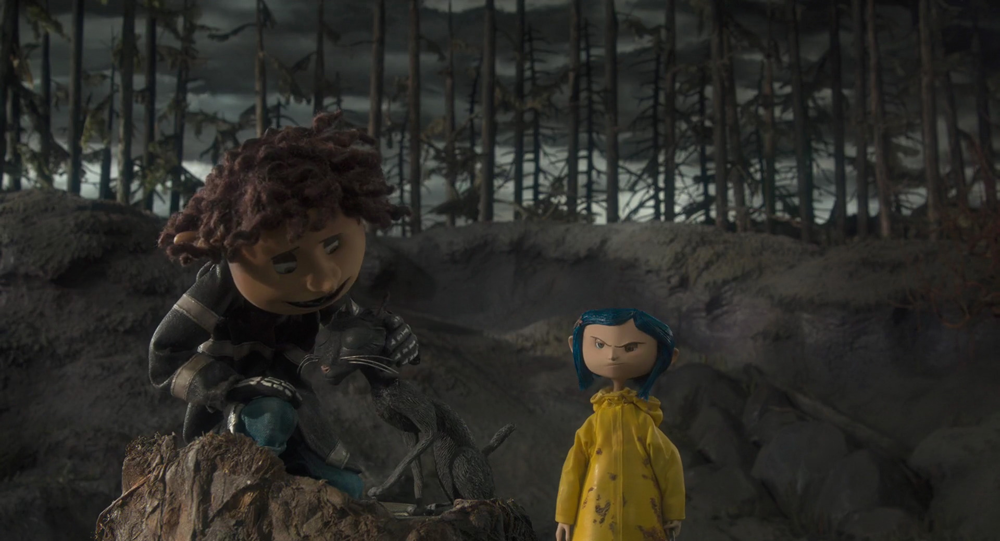
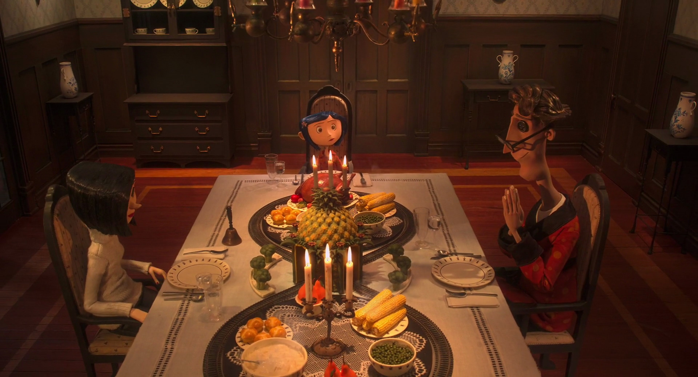
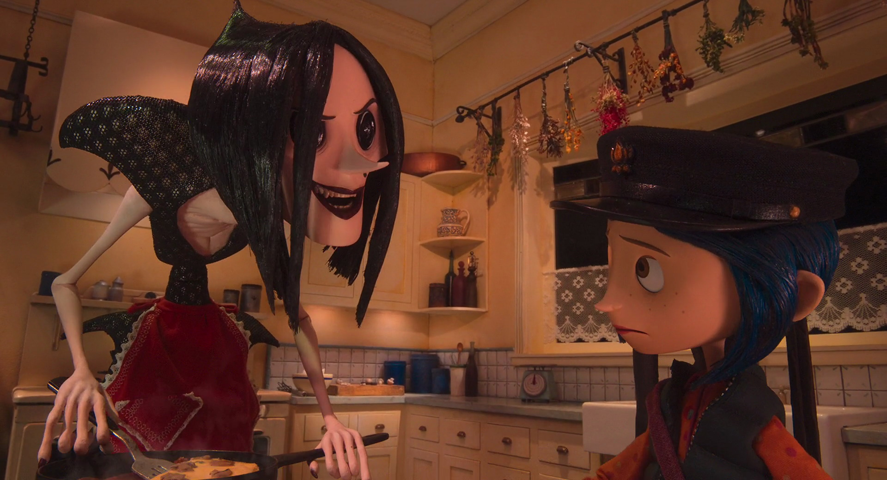
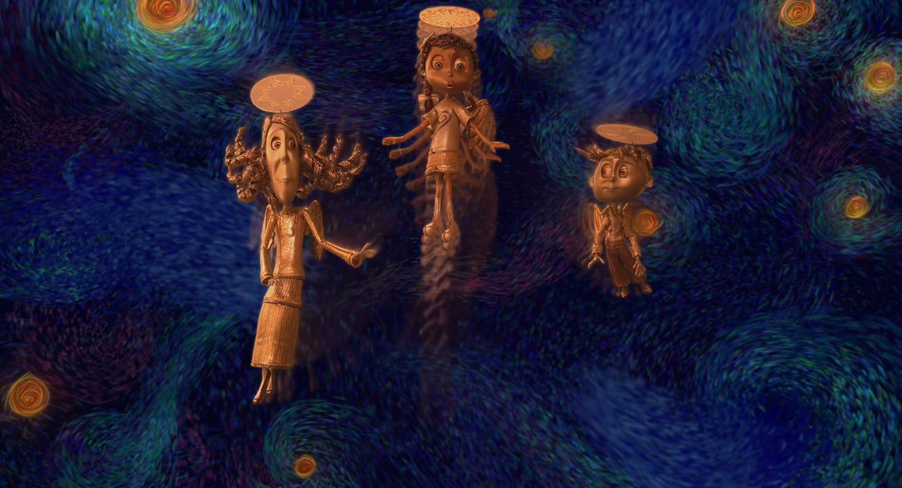

Historia

|
Cuando Coraline y su familia se mudan al Palacio Rosa ella está un poco molesta y aburrida por la falta de atención de sus padres, entonces decide explorar. Durante su exploración conoce a Wybie y a su gato negro, el le cuenta que su abuela nunca renta su casa a familias con niños pero antes de darle una razón el debe irse. Cuando Coraline regresa a su casa insiste a su madre para que le abra una pequeña puerta, ella accede pero la puerta está bloqueada con ladrillos. |
 |
|  |
Luego de la cena Coraline se va a dormir y es interrumpida por un ratón que la lleva hacia la pequeña puerta. Para sorpresa de Coraline en vez de los ladrillos hay un tunel colorido y brillante que la lleva nuevamente a la sala de la casa, pero está vez la casa se ve diferente, allí conoce a sus Otros Padres que tienen ojos de botón y la tratan mejor que sus padres reales. |
|
Despues de comer y ver a su Otro Padre tocar el piano Coraline se va a dormir y al despertar se encuentra nuevamente en el mundo real, en el desayuno le cuenta a su madre lo que sucedió la noche anterior, ella evidentemente no le cree y regresa a su trabajo. Luego de un par de visitas mas al Otro Mundo, la Otra Mamá muestra sus veredaderas intenciones de secuestrar a Coraline y robar su alma. |
 |
|  |
Finalmente Coraline enfrenta a la Otra Madre que resultó ser una bruja, el gato negro la ayuda a resolver varios acertijos que eran la condición para ganar su libertad, ellos logran completarlos todos y de esta manera salvan a los padres de Coraline y las almas de otros niños que habían sido seducidos por la bruja. |